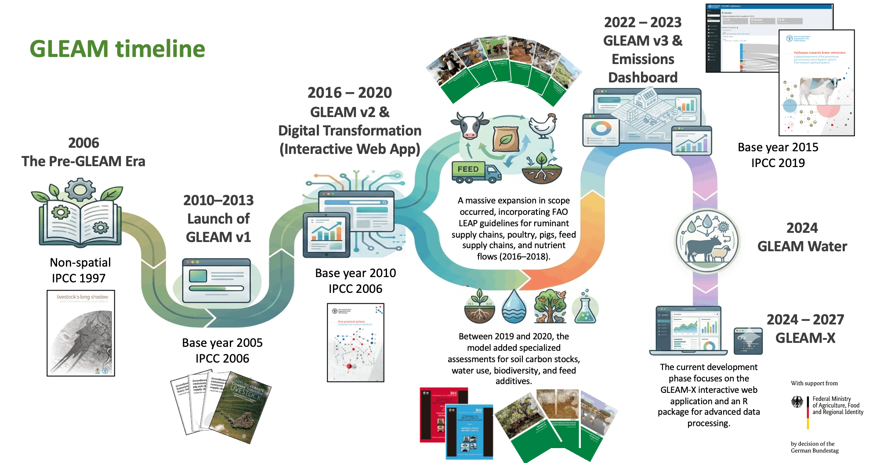

History of GLEAM
GLEAM builds on nearly two decades of FAO work on assessing the environmental impacts of livestock systems at global scale. Key milestones include:
- 2006: Pre-GLEAM era of non-spatial global assessments.
- 2010–2013: Launch of GLEAM v1 with spatially explicit LCA using 2005 reference-year data.
- 2017: Release of GLEAM v2 and the GLEAM-i interactive web tool.
- 2023: Release of GLEAM v3 with 2015 reference-year data, based on the 2019 IPCC Refinement, and the GLEAM Dashboard.
- 2024: GLEAM-Water. The first global assessment of water use in livestock agri-food systems
- 2024–present: GLEAM-X initiative delivering an open-source R package and interactive web application.

The history of the GLEAM model with different versions and major releases